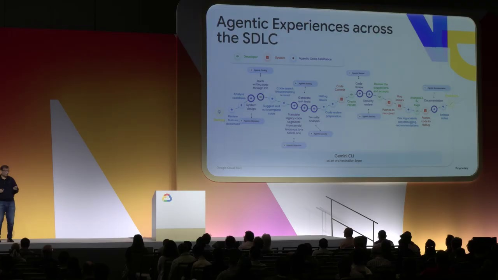
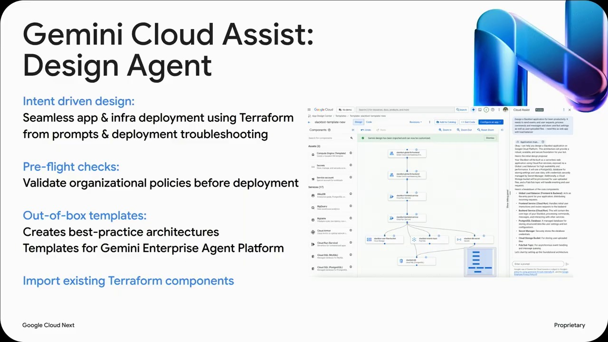
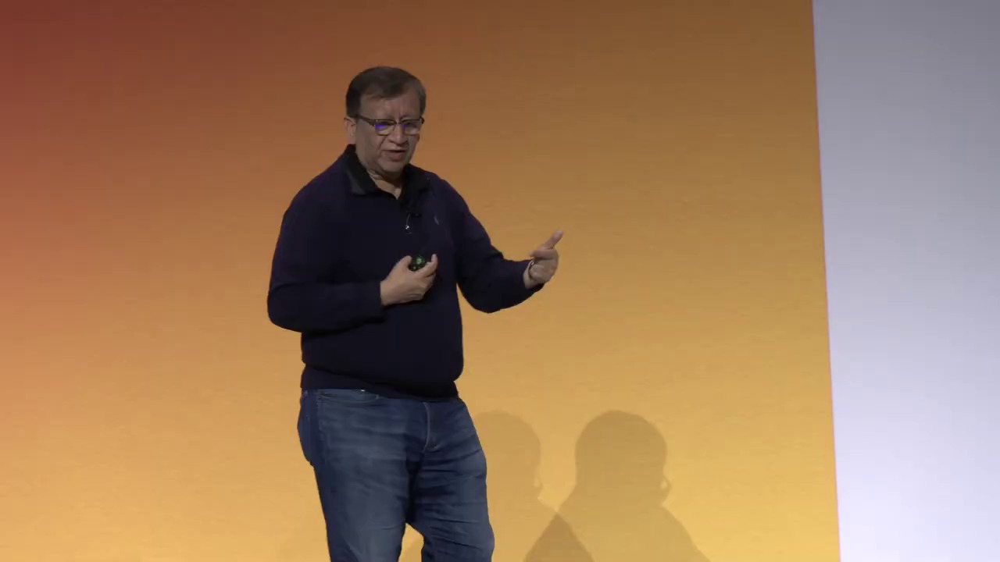
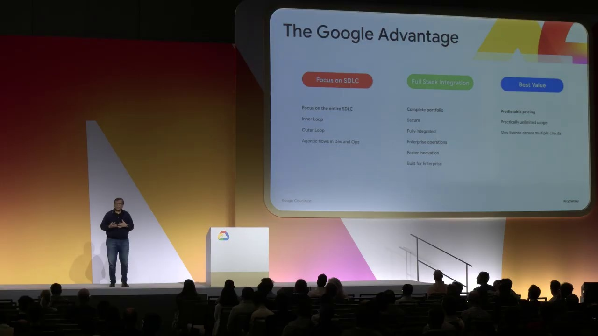

Key Moments







Summary & Script
The agentic shift in software development life cycle
Source: https://www.youtube.com/watch?v=161TA9Z0vxk
Video ID: 161TA9Z0vxk
Overview
The session explores the “agentic shift” in the software development life‑cycle, focusing on how AI‑driven agents are being adopted, the challenges of running many agents in parallel, and practical ways to move AI‑generated code into production. The speakers present recent adoption data, discuss security and isolation concerns, and demo Cyan—an open‑source container‑based orchestrator that acts as a hypervisor for LLM agents.
Topics Covered
- AI adoption in development – DORA surveys show ~90 % of developers now use AI; 70 % rely on it for new (green‑field) code.
- Agents as amplifiers – When prompts and context are clean, agents boost productivity; poor context propagates errors.
- Evolution of AI capabilities – From simple “retrieve‑and‑respond” models to reasoning, planning, and multi‑step agents.
- Human‑in‑the‑loop – Current agents still need user validation (e.g., code‑review agents on GitHub).
- Challenges of multi‑agent ecosystems – Isolation, security, conflicting actions, and tight coupling between agents and specific LLM models.
- Cyan framework – Open‑source test‑bed/orchestrator that runs each agent in its own container, providing isolation, parallel execution, detachment, and easy model switching.
- Demo highlights – Creating a Python script via a Gemini‑backed agent, showing file isolation, detaching the agent, and confirming the generated code persists after the agent stops.
- Scaling to many agents – Cyan supports hierarchical spawning (agents creating sub‑agents) and converging workflows while keeping the orchestration model‑agnostic.
- Production readiness – Discussion (by Rakkesh Duper) on moving AI‑generated code through CI/CD pipelines, maintaining velocity, and avoiding bottlenecks.
Key Takeaways
- AI is now a mainstream productivity tool; the majority of new code at Google is AI‑generated.
- Agents act as “amplifiers” – they boost good work but can also amplify bad context, making prompt quality critical.
- Security and isolation are paramount; containers provide a safe sandbox that prevents rogue agent actions from contaminating the main workspace.
- Cyan offers a hypervisor‑like layer for orchestrating heterogeneous LLM agents, supporting parallelism, detachment, and model‑agnostic operation.
- Developers can safely generate, review, and merge AI‑produced code without disrupting their local environment.
- Moving AI‑written code to production still requires pipeline integration; higher velocity is only valuable if the CI/CD flow can keep up.
Notable Quotes
- “The primary role of AI in software development is that of an amplifier. If your context is clean, the goodness spreads; if not, the mess spreads.”
- “We are moving from prompt‑and‑response to plan‑and‑execute—agents are no longer just answering, they are orchestrating tasks.”
- “Cyan is a hypervisor of agents—it manages a fleet of isolated, container‑based agents just like VMware manages VMs.”
- “Even after the agent stops, the generated file remains, allowing developers to review and merge it safely.”
Podcast Script
JORDAN: Welcome to SlackCasts by PodSlacker — where AI does the watching so you can do the listening. If you want a richer experience with today's episode, visit PodSlacker dot com slash SlackCasts — you'll find a written summary, key frame moments from the video, and an interactive AI chat to explore the topic as deep as you like. Now let's get into it.
MIKE: Let’s dive straight into the “agentic shift” they’re talking about—AI agents moving from simple query‑response bots to full‑blown orchestrators in the software development lifecycle. First up, the adoption numbers: DORA’s latest survey says roughly 90 % of developers are touching AI daily, and about 70 % use it for green‑field code. That’s a seismic change.
JORDAN: Absolutely. The internal Google data they highlighted is even more striking: AI‑generated code went from 25 % a year ago to 75 % of all new code today. The acceleration lines up with the transition they described—from “retrieve‑and‑respond” models to reasoning and planning agents.
MIKE: Right, and that evolution underpins the “amplifier” metaphor they use. If you feed an agent a clean, well‑scoped prompt, the quality of the output propagates through the codebase. Conversely, a sloppy prompt spreads bugs just as quickly. It puts prompt engineering front‑and‑center as a productivity lever.
JORDAN: Which is why the “human‑in‑the‑loop” still matters. Even today’s code‑review agents—like Gemini Code Assist on GitHub—automatically annotate pull requests, but a senior engineer still has to approve the changes. The agents are amplifiers, not autonomous developers.
MIKE: That brings us to the core pain point: scaling a fleet of agents. If you have dozens of specialized agents—some tied to Gemini, others to Claude, some custom‑built—how do you prevent them from stepping on each other’s toes, leaking secrets, or unintentionally executing destructive commands?
JORDAN: Security and isolation are the two biggest concerns. The talk highlighted three failure modes: rogue agents performing RM‑RF, agents colliding on the same files, and tight coupling between an agent and a particular LLM model, which hampers swapping models when you need better latency or cost.
MIKE: Enter Cyan, the open‑source hypervisor‑style orchestrator. It treats each agent as a containerized VM, giving you sandboxed execution, model‑agnostic routing, and deterministic lifecycle control. Think VMware for LLM agents.
JORDAN: The demo showed exactly that. They launched a Gemini‑backed Python generator inside a Cyan container, used a T‑max sub‑terminal so the host shell remained untouched, and then detached the agent. Even after the container stopped, the generated fib.py persisted in the agent’s workspace, ready for a manual review.
MIKE: The persistence is a subtle but critical feature. In many “AI coding” tools, the output evaporates when the session ends, forcing you to copy‑paste. Cyan writes to a volume that outlives the container, so you can run a diff, run tests, or open a pull request without any extra steps.
JORDAN: And because each agent runs in its own Docker image, you can run multiple agents in parallel without any namespace collisions. The orchestration layer handles spawning sub‑agents, converging their results, or diverging workflows—all while staying model‑agnostic. You could have a Gemini agent generate scaffolding, a Claude agent refactor, and a local LLM run unit tests, all simultaneously.
MIKE: That model‑agnosticism is key for cost optimization. If you need a high‑quality draft you fire up Gemini, then switch to an open‑source model for bulk linting or style checks. Cyan’s config lets you map any LLM to a container image, so swapping models is a one‑line change.
JORDAN: The demo also highlighted the “detached” state. Detachment means the container keeps running in the background, so your developer workflow isn’t blocked. You can spin up an agent, let it compile a large codebase, then walk away and come back to the results. It’s essentially asynchronous CI for AI‑generated artifacts.
MIKE: Speaking of CI, Rakkesh’s segment tackled productionizing AI‑generated code. The velocity boost is useless if your CI/CD pipeline becomes the bottleneck. They emphasized three integration points: automatic linting of generated files, gated PRs with mandatory human approval, and incremental rollout via feature flags.
JORDAN: They also mentioned that agents can output metadata—like which model generated which file, the prompt version, and runtime logs. Feeding that into the pipeline lets you trace back any defect to the exact agent run, which is essential for compliance and debugging.
MIKE: On the security front, Cyan isolates file systems, network, and even GPU access per container. That mitigates the RM‑RF risk and also ensures that a compromised agent can’t exfiltrate credentials from the host. You still need to scan the container images for vulnerabilities, but the attack surface is dramatically reduced.
JORDAN: Another neat feature is hierarchical spawning. An orchestrator agent can spawn a “test‑runner” sub‑agent that executes the generated unit tests inside its own sandbox, reports pass/fail, and then terminates. The parent agent aggregates the results and decides whether to push the code forward.
MIKE: This mirrors the classic “plan‑and‑execute” loop they described. Instead of a single turn‑based prompt, you now have a directed graph of agents, each responsible for a micro‑task, converging on a final artifact that’s ready for human review.
JORDAN: The open‑source nature of Cyan means the community can contribute new model adapters, custom security policies, or even domain‑specific orchestration patterns. The talk stressed that you can spin it up in about 15 minutes on any machine with Docker installed.
MIKE: And because it’s just Docker, you can run Cyan on a dev laptop, a CI runner, or a Kubernetes cluster for massive parallelism. The same orchestration logic scales from a single developer to an enterprise‑wide AI‑code generation farm.
JORDAN: Summing up the practical takeaways: first, treat AI as an amplifier—not a replacement. Second, sandbox every agent with container isolation to protect your workspace. Third, use an orchestrator like Cyan to manage parallelism, model‑agnostic routing, and lifecycle. Fourth, embed generated artifacts into your existing CI/CD funnel with metadata and gated reviews.
MIKE: And finally, remember that velocity only translates to business impact when the downstream pipeline can keep up. If you accelerate code creation but your release process stalls, you’ve just created a new bottleneck. Cyan helps close that gap by making the handoff from agent to pipeline explicit and reproducible.
JORDAN: That’s a wrap on today's SlackCast. Head over to PodSlacker dot com slash SlackCasts for the written summary, visual key moments, and an AI chat to dive even deeper into today's topic. Until next time — slack off smarter.